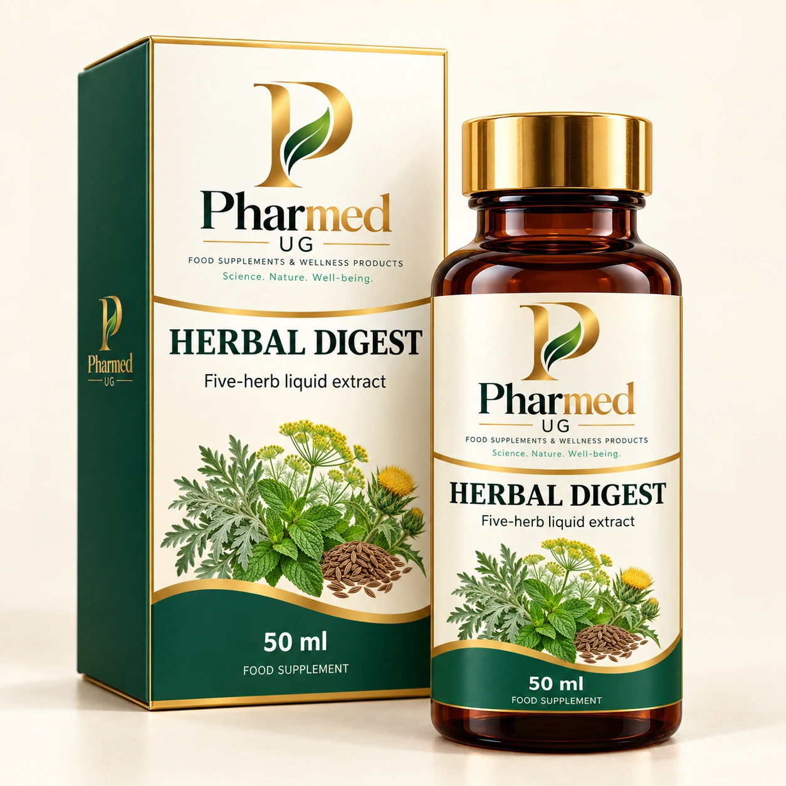
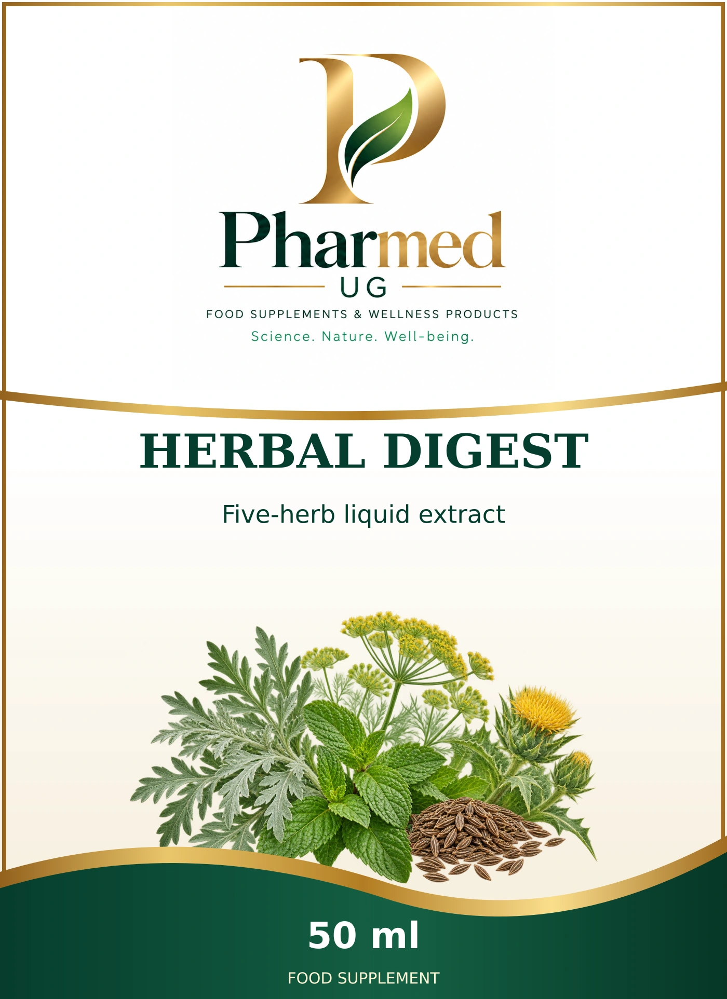

HERBAL DIGEST
Five-herb liquid extract
Five traditional herbs form a distinctive bitter botanical profile. A measured liquid format with wormwood, peppermint, dill, blessed thistle and caraway.
Complete selected ingredient declaration
Ethanolic extracts of wormwood herb, peppermint leaves, dill fruit, blessed thistle herb and caraway fruit. Contains 40% alcohol by volume.
German source declaration
Ethanolische Extrakte aus Wermutkraut, Pfefferminzblättern, Dillfrüchten, Benediktenkraut und Kümmelfrüchten. Enthält 40 Vol.-% Alkohol.
Published component amounts
| Component | Amount | Exact table basis |
|---|---|---|
| Wormwood herb extract (1:5.9) | 1.16 ml | 4 ml Tagesmenge (2 x 2 ml) |
| Dill fruit extract (1:5.9) | 0.56 ml | 4 ml Tagesmenge (2 x 2 ml) |
| Blessed thistle extract (1:5.9) | 0.56 ml | 4 ml Tagesmenge (2 x 2 ml) |
| Caraway fruit extract (1:5.9) | 0.56 ml | 4 ml Tagesmenge (2 x 2 ml) |
| Peppermint leaf extract (1:5.9) | 1.16 ml | 4 ml Tagesmenge (2 x 2 ml) |
| Ethanol | 40 % v/v | finished liquid |
Each row retains its source basis. Amounts per tablet, daily portion, 100 g, 100 mL and prepared serving are distinct. “Not published” means undisclosed, not zero. Raw-material input masses and processing allowances require the manufacturer specification.
Reference directions & product information
When needed, take 2 mL before a main meal, up to twice daily.
Die empfohlene Tagesmenge nicht überschreiten. Nahrungsergänzungsmittel ersetzen keine ausgewogene, abwechslungsreiche Ernährung und gesunde Lebensweise. Für kleine Kinder unzugänglich aufbewahren. Nur für Erwachsene. Nicht für Schwangere und Stillende. Enthält 40 Vol.-% Alkohol; 2 ml liefern bis zu 0,8 ml Alkohol.
Reference formulation for private-label development; the final PHARMED directions follow the validated manufacturer specification.

The shared label design
This is the exact front artwork used in the catalogue and measured factory artwork. The three-dimensional packaging image illustrates its presentation.
Open the master front